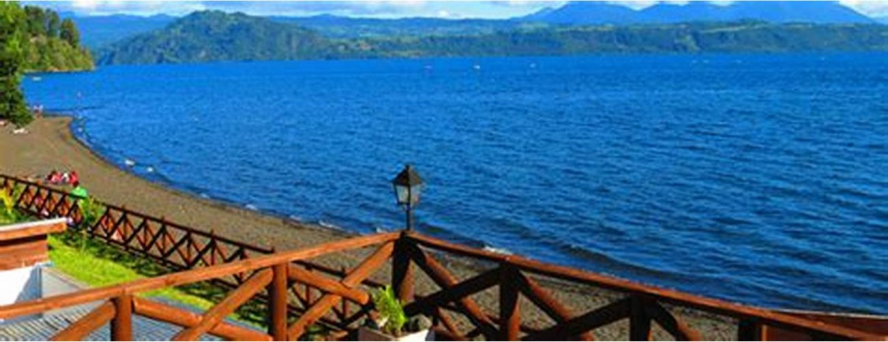
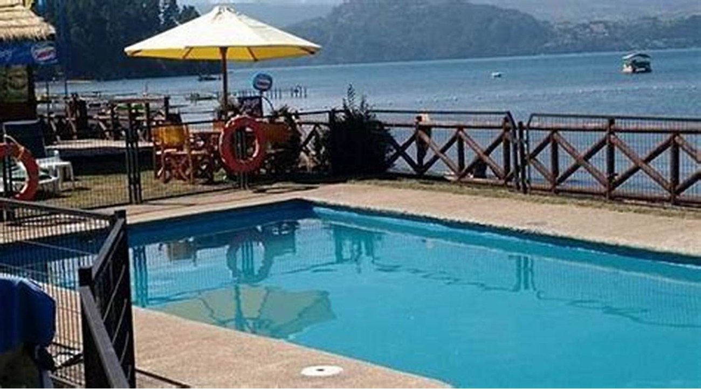
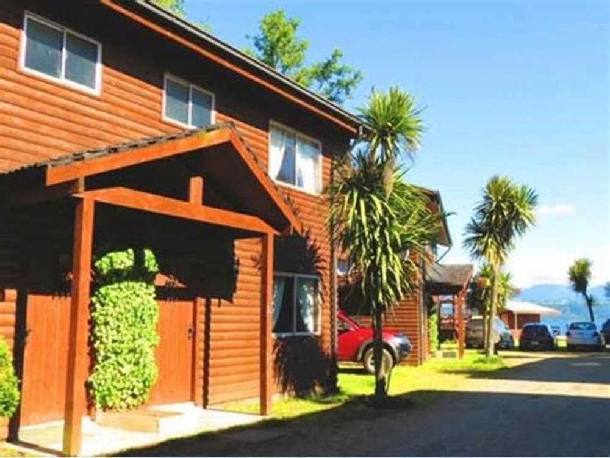
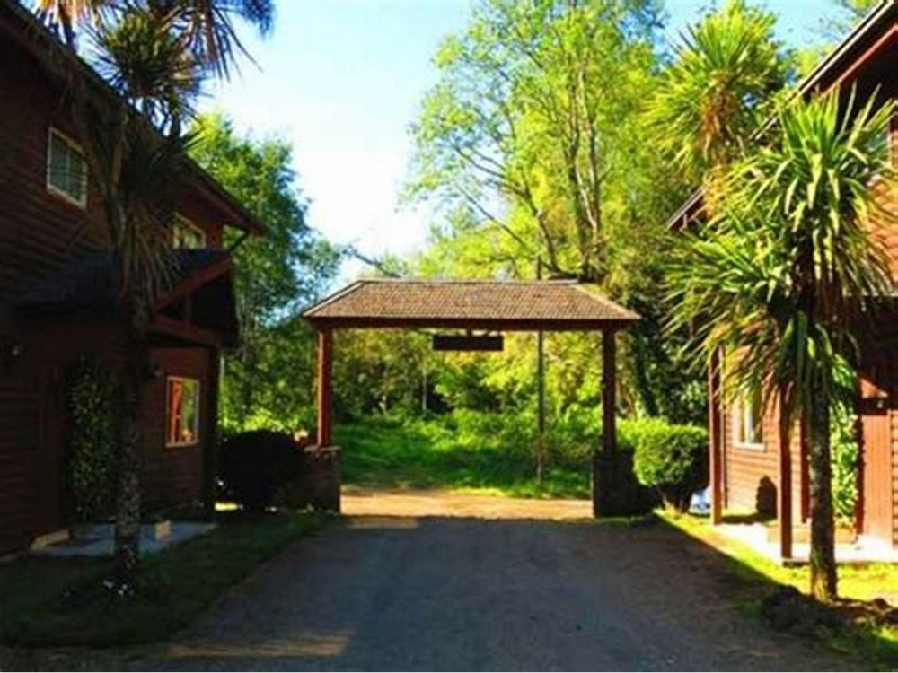
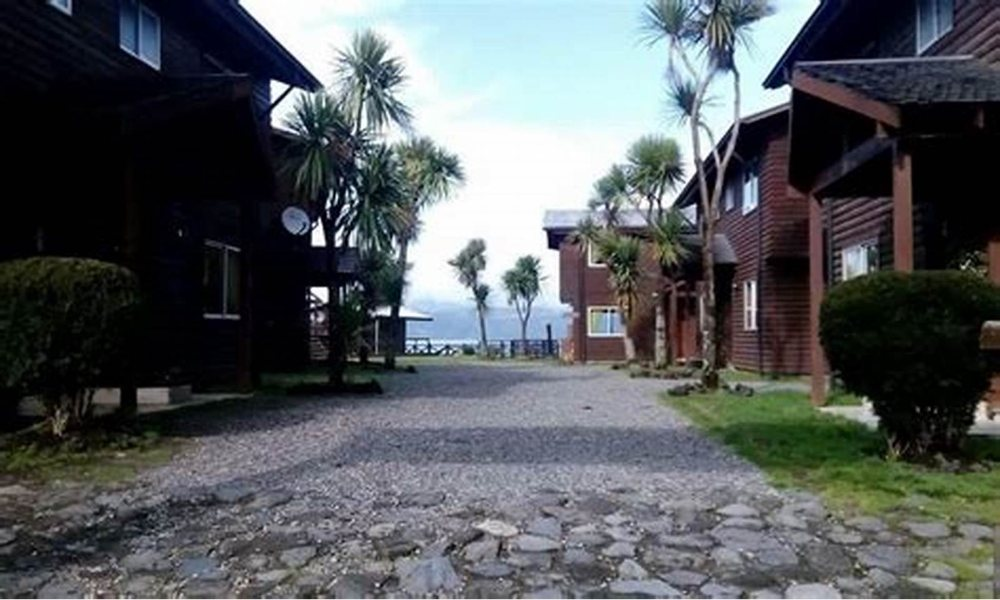

Cabañas · Licán Ray
El lago
también existe
en julio
En enero Licán Ray está lleno y todas las cabañas se arriendan solas. El resto del año hay que salir a buscar al cliente — y para eso hace falta contarle algo que hoy nadie le cuenta.
- reseñas en Google
- 116
- ¿abren en invierno?
- falta: confirmar
- teléfono
- +56 9 9639 5043
La misma cabaña, dos veces
La temporada baja
vale oro
Casi todas las páginas de cabañas muestran el verano y esconden el invierno, como si el negocio durara dos meses. Es al revés: el verano se vende solo. Lo que hay que contar es el resto del año, y contarlo bien es lo único que llena una cabaña en julio.
Enero
temporada alta
- El lago
- Lleno. La playa se comparte y hay que llegar temprano para agarrar sombra.
- La cabaña
- Se usa para dormir: el día entero se pasa afuera.
- Precio
- falta: tarifa de alta
- Con cuánto se reserva
- falta: meses de anticipación
- Lo que se hace
- Playa, lago, feria, todo abierto.
- Lo honesto
- Hay ruido, hay gente y hay que compartir el pueblo. No es un defecto: es enero.
Julio
temporada baja
- El lago
- Vacío. Se camina por la orilla sin cruzarse con nadie, y esa foto no la tiene ninguna cabaña publicada.
- La cabaña
- Se usa entera. La estufa prendida y la ventana con el lago adentro es el panorama.
- Precio
- falta: tarifa de baja
- Con cuánto se reserva
- falta
- Lo que se hace
- Termas cerca, lago solo, comer y no hacer nada. falta: qué está abierto en invierno
- Lo honesto
- Llueve, hay días que no se sale, y varios locales del pueblo cierran. Decirlo antes es lo que hace que el que igual viene, vuelva.
Por qué esta comparación vende y una galería de fotos de verano no. El que busca cabaña en enero ya decidió venir: sólo compara precios. El que la busca en julio todavía no sabe si vale la pena el viaje — y a ése hay que convencerlo con palabras, no con una foto de la playa llena. Es el único cliente que se gana escribiendo.
Las dos columnas cuentan lo mismo: la misma cabaña, el mismo lago, seis meses de diferencia. La de la derecha es la que hoy no existe en ninguna parte de internet.
La única pregunta que importa
Esto es lo que se ve desde la baranda
Todas las cabañas de Licán Ray dicen «vista al lago». Muy pocas publican la vista. Ésta es la de acá, sin recorte y sin filtro: el Calafquén entero y los cerros del frente. El que reserva sin verla está apostando; el que la ve ya decidió. Publicar la foto de la vista es la diferencia entre competir por precio y competir por lo que se tiene.
Lo que hay hoy en internet
Trece años
después
Su página es de 2012 y se nota. No voy a describir lo que dice, porque lo que dice no es el problema: el problema es el estado en que está y lo que ese estado le comunica a alguien que la abre por primera vez.
-
Está rota a la vista
No hay que ser diseñador para notarlo: se abre y algo no calza. Y el visitante no piensa «esta página está vieja», piensa «este lugar debe estar igual».
-
Fue hecha antes de que existiera el teléfono como se usa hoy
En 2012 casi nadie buscaba cabañas desde el celular. Hoy es prácticamente lo único. Una página de esa época no está mal hecha: está hecha para otro mundo.
-
Trece años es mucho tiempo de reseñas ganadas
116 reseñas no se juntan sin atender bien. Todo ese trabajo está compitiendo contra una página que da la impresión contraria.
Lo que hay
Una página de 2012
Con la que nadie del local puede hacer nada solo, y que probablemente ni siquiera se puede editar ya.
Lo que puede haber
Una página que se explica sola
Un archivo, sin sistemas ni contraseñas de terceros, que se cambia editando texto. Los precios de la próxima temporada los pueden actualizar ustedes.
Antes de la llamada conviene abrir su página en el teléfono y guardar una captura. Esa captura es el argumento entero: no hay que explicar nada, se muestra.
Flor de piedra
El nombre viene de la orilla, y la orilla está a pasos
Para reservar, hoy se llama
+56 9 9639 5043
Es el número publicado en su ficha de Google. Es lo único de su presencia en internet que sigue funcionando igual que hace trece años.
Todo esto es de ellos
Las seis fotos con pie son suyas. Sólo tres imágenes de la página no lo son —el fondo de piedras de la portada, el aura y la cita— y están declaradas en imagenes/FUENTES.txt.


falta: la vista del lago al atardecer, y una cabaña por dentro con luz de tarde


